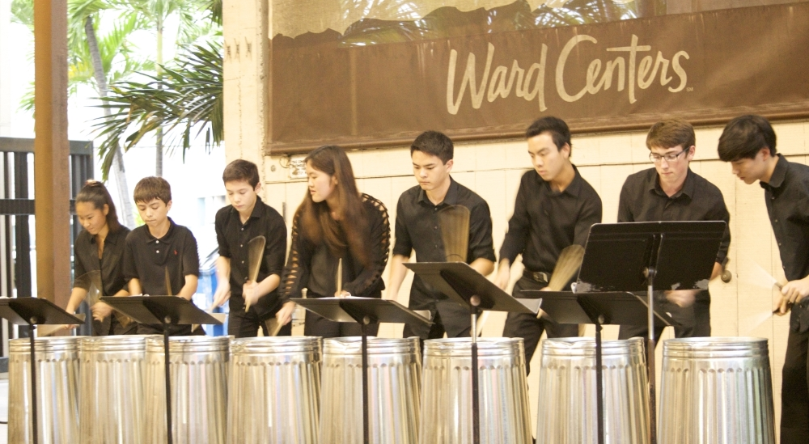
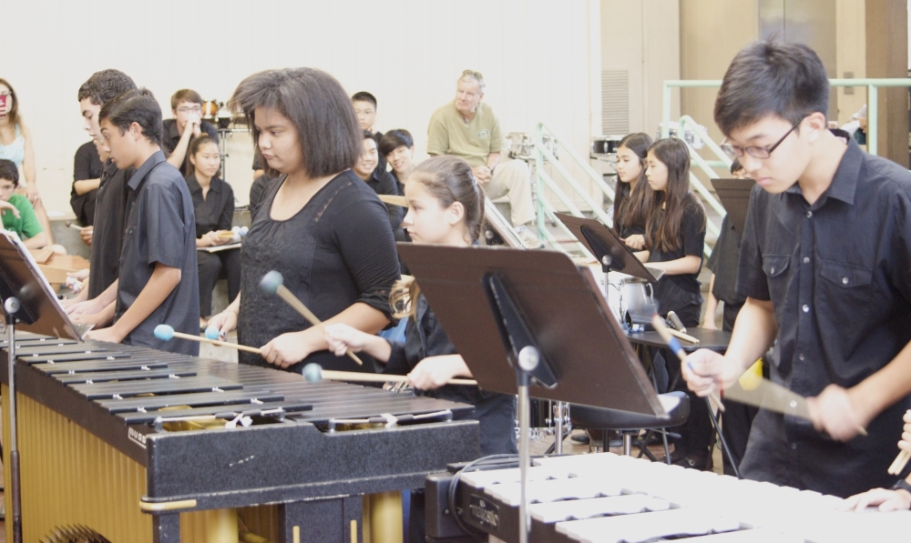
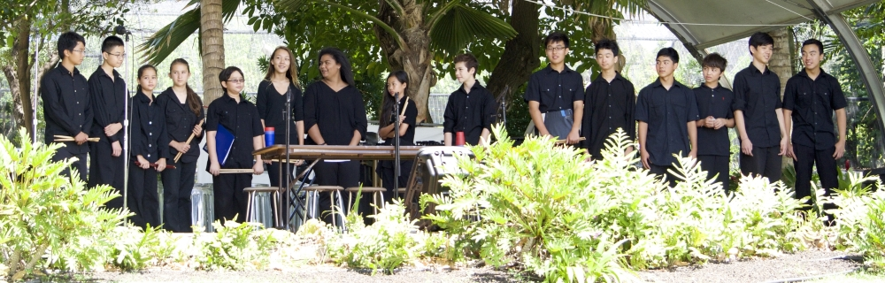

We are an enthusiastic group of percussionists and mentors located in Honolulu, Hawaii.

Our vision is to create a community of musicians who are drawn together to develop and share their love and appreciation of music.

We strive to enhance the talents of students who have discovered a passion for practicing and performing so that they may pass on, develop, and express these talents with others.
